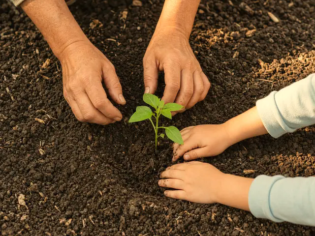

Åpent hverdager 06.45–17.15
Pengene blir i barnehagen.
Bårdshaugen Barnehage AS eies av foreldrene og tar ikke ut utbytte. Pengene brukes i barnehagen, «til økt bemanning, miljø og innhold».
Målet er at barnehagen skal være et godt sted å være for barn og voksne. Visjonen er «Trygg på neste steg».
Bårdshaugen er en foreldreeid barnehage midt på Skei i Surnadal. Vi har 46 barn mellom 1 og 5 år og er åpne hverdager 06.45–17.15.
Hvem som står bak
Styreleder er Espen Røv, 932 68 352. Daglig leder er Reetta Järvinen, 411 22 302.
- 46barn mellom 1 og 5 år
- 5,9barn per ansatt
- 56,8 %av de ansatte er barnehagelærere
- 4,9av 5 i samlet tilfredshet, 2026. Bare 12 svarte.
I foreldreundersøkelsen 2026 ga foreldrene 4,9 av 5 i samlet tilfredshet. Ute- og innemiljø og informasjon fikk 4,4. Bare 12 svarte (27,9 prosent), så resultatet er usikkert.
[Fylles inn: sitat fra forelder, med samtykke]
